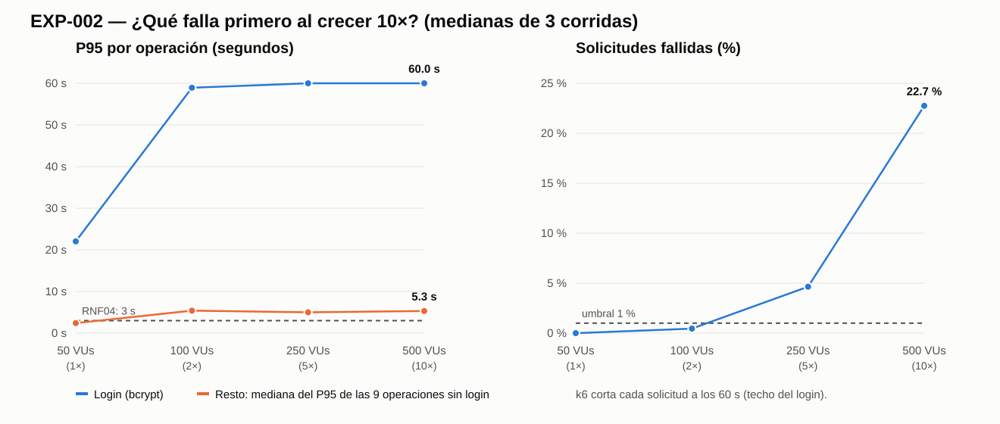

Distribución, resiliencia, rendimiento y costo en CookSmart
Juan Manuel Bermúdez Rodríguez · Miguel Ángel Santamaría Cuero · Leonardo Juan Pablo León Robelto
Base de datos · API · red · autenticación · consultas · despliegue · equipo · monitoreo
El login (bcrypt costo 12) satura el único núcleo que usa la API, mientras PostgreSQL queda al ≈ 2 % de CPU.
Y de paso: no había monitoreo que lo mostrara.
/experimentosRegla clave: la medición debe re-ejecutarse en vivo. Si no se reproduce, la fila cae a Insuficiente.
docker stats muestrea CPU de API y PostgreSQL.P95 > 3 000 ms o error > 1 %
Pre-registro: commit 02a5143

| Nivel | CPU API | CPU PostgreSQL | Solicitudes/s | P95 login | Error login | Recorridos completos |
|---|---|---|---|---|---|---|
| 50 VUs (1×) | 100,1 % | 2,4 % | 16,5 | 22,0 s | 0,0 % | 100 % |
| 100 VUs (2×) | 99,9 % | 1,8 % | 17,7 | 58,9 s | 4,3 % | 95,7 % |
| 250 VUs (5×) | 99,9 % | 2,5 % | 28,4 | 60,0 s | 32,8 % | 67,2 % |
| 500 VUs (10×) | 100,0 % | 2,4 % | 31,9 | 60,0 s | 73,2 % | 19,0 % |
Causa: un login cuesta ≈ 0,3–0,5 s de CPU (bcrypt 12). Node usa un solo hilo → ≈ 3 logins/s como máximo.
Contagio: las otras 9 operaciones no fallan (0 % error) pero su P95 sube ×2–×3: esperan turno en el mismo hilo.
Saturación: de 5× a 10× el throughput casi no sube. Solo 1 de cada 5 usuarios termina su recorrido.
| Hipótesis | Dato | Veredicto |
|---|---|---|
| H-A | El login falla desde 50 VUs, pero “detalle” también pasa el umbral ese nivel (P95 3 102 ms). Empate sin niveles menores para desempatar. | Refutada (estricta) |
| H-B | A 50 VUs: API 100,1 % CPU, PostgreSQL 2,4 %. | Confirmada |
| H-C | El resto sube entre 1,98× y 3,19×, no 5×: el sistema se satura y “aplana”; los usuarios extra quedan atascados en el login. | Refutada |
La táctica debe atacar la CPU del login dentro del proceso, no la base de datos. Microservicios no ataca la causa: el login necesita núcleos, y eso se logra en el mismo host.
A 10×, ≈ la mitad de los logins fallidos son conexiones rechazadas en la ráfaga inicial, no timeouts. Excluyéndolas, ≈ 57 % sigue expirando. La conclusión se mantiene.
| # | Componente | Modo de fallo | Cuándo | Evidencia | Severidad |
|---|---|---|---|---|---|
| F1 | Autenticación | bcrypt satura el único hilo de Node | Desde 1× | Medido | Crítica |
| F2 | API (resto) | Contagio: esperan turno en el hilo ocupado | Desde 1× | Medido | Alta |
| F3 | API (capacidad) | El throughput deja de crecer; 19 % de recorridos | 5×–10× | Medido | Crítica |
| F4 | Monitoreo | Sin métricas ni alertas: solo se vio con el experimento | Siempre | Medido | Alta |
| F5 | Despliegue | Un solo contenedor: reiniciar = caída (0,5–3,4 s) | Cada despliegue | Medido | Media |
| F6 | Base de datos | Caída de la única instancia | No observado | Inferido | Alta / prob. baja |
| F7–F8 | Consultas / pool | N+1, pool agotado: ≤ 1 conexión activa | No ocurre | Medido que no | Baja |
| F11 | Equipo | 3 personas sin guardias; distribuir multiplica la operación | Al distribuir | Inferido | Media |
| F12 | Healthcheck | Marca unhealthy bajo carga; un orquestador reiniciaría en plena saturación | A 10× | Medido | Media |
| Táctica | Mitiga | Decisión para CookSmart | Estado |
|---|---|---|---|
| Bulkhead + degradación del login (T1) | F1, F2, F3 | Aísla el recurso que se satura para que no arrastre al resto | Validada |
| Caché del catálogo (T2) | F2, F7 | Libera CPU del hilo compartido (no de la base) | Validada |
| Más núcleos del mismo host (D1) | F1, F3, F5 | El cuello es 1 núcleo de 12 | Validada (EXP-004) |
| Timeout | F1, F6 | Hoy solo el del cliente (60 s); T1 añade timeout de cola de 1 s | Parcial |
| Retry con backoff | F5, F9 | Solo lecturas/idempotentes. Nunca reintentar el login saturado | No implementado |
| Circuit breaker | F6 | Una sola dependencia que no falla bajo carga: bajo valor hoy | Descartado |
| Rate limiting en login | F1, abuso | Complementa T1: separa abuso de demanda legítima | Pendiente |
| Monitoreo mínimo | F4 | CPU y latencia por ruta | Parcial |
| Cola durable / broker | F10 | ADR-003 mantuvo escrituras síncronas | Descartado |
Δ T1 = −91,9 % · Δ T2 = −37,0 % · error del resto: 0 % en las tres
Sorpresa: esperábamos que la caché no llegara a 30 % porque la base estaba ociosa. Ahorra CPU del hilo (procesar y serializar JSON), no trabajo de la base.
| T1 bulkhead | T2 caché | |
|---|---|---|
| Login | Rechaza rápido: 503 + Retry-After en 1,4 s (no 60 s) | Sin efecto |
| Logins exitosos | 263 vs 269 (≈ igual) | 268 |
| Recorridos completos | 263 (vs 187) | 268 |
| Costo | “Intenta de nuevo” en ráfagas; estado por proceso | Datos hasta 60 s viejos; memoria |
| ¿Más capacidad de login? | No | No |
La primera versión del bulkhead rechazó el 98,8 % de los logins con 503 y ninguno tuvo éxito en las 3 corridas.
Si un cliente se iba mientras esperaba en cola, su cupo nunca se liberaba. Con los 2 cupos fugados, el login quedaba bloqueado para siempre.
Una prueba que falla con el código original y pasa con la corrección (a4bbe35). Re-medimos T1 completo y la prueba quedó en CI como FF-3.
Desviación declarada (D1). La evidencia defectuosa se conserva en resultados/t1-con-defecto/: no se borra lo que salió mal.
| Métrica (500 VUs, mediana de 3) | 1 proceso | 4 procesos | Hipótesis |
|---|---|---|---|
| Logins exitosos por segundo | 3,03 | 13,37 | H-D1a ≥ 3× Sí |
| Tasa de error del login | 70,7 % | 24,6 % | H-D1b ≤ 50 % del de w1 35 % |
| CPU de PostgreSQL | 1,8 % | 8,2 % | H-D1c ≤ 50 % Sí |
| Recorridos completos | 190 | 1 066 | 5,6× más trabajo útil |
El 24,6 % restante son las conexiones rechazadas en la ráfaga inicial (igual con 1 o 4 procesos). Estimado, no medido: a 10× harían falta ≈ 12 núcleos solo para el login con bcrypt 12.
| Alternativa | Infra (USD/mes) | Operación (h/semana) | Cambios de código | ¿Ataca el cuello medido? |
|---|---|---|---|---|
| D0 Monolito, 1 proceso | 10¹ | 10⁰ | Ninguno | No: es lo que colapsa |
| D1 Monolito, N procesos, mismo host ✅ | 10¹ | 10⁰ | Solo configuración | Sí: 4,4× medido |
| D2 Monolito en varios hosts | 10² | 10⁰–10¹ | Ninguno (JWT stateless) | Sí, pero sobran núcleos |
| D3 Microservicios (propuesta IA) | 10³ | 10¹–10² | Reescribir integración | Indirecto: igual que D1 |
Supuestos explícitos de nube pública de gama de entrada. No es una cotización: sirve para comparar alternativas entre sí.
Lo que más pesa no es el dinero sino las horas del equipo: con 3 personas, 10–100 h/semana de operación compiten con el producto.
Todo es variable de entorno: API_WORKERS=1, LOGIN_BULKHEAD=off, CACHE_CATALOGO=off.
Las tres medidas se midieron por separado. Antes de activarlas por defecto hay que medir la combinación w4 + T1 + T2 (el estado es por proceso: 4 × 2 = 8 cupos).
Confirmada / Ajustada / Reconsiderada — se registra después de la sesión.
| Elemento propuesto por la IA | Contraste con los datos | Veredicto |
|---|---|---|
| 5 servicios, uno por contexto | Darle núcleos al login se logra con D1 | Innecesario |
| 5 bases de datos | PostgreSQL al ≈ 2 % de CPU | Innecesario |
| API Gateway | Un salto más no reduce la CPU del login | Innecesario |
| Broker de eventos | Spike 1: 66/1000 escrituras perdidas con crash | Rechazado (ADR-003) |
| Kubernetes + autoscaler | F12: reiniciaría la API en plena carga | Riesgoso |
| Recomendación como servicio | No relacionado con el crecimiento | Fuera de alcance |
| Redis como caché | La caché en memoria ya dio −37 % | Parcial, hoy no |
| Observabilidad | Ataca F4 (sin monitoreo) | Versión mínima |
Lo que la IA omitió: no preguntó qué fallaba, no habló de costo y no propuso aislar (bulkhead), solo escalar.
| ID | Protege | Regla | Umbral | Qué rompe |
|---|---|---|---|---|
| FF-1 | ADR-002: capas | Cada archivo solo importa capas permitidas; solo config/ usa pg | 0 violaciones | Job de fitness.yml → PR en rojo |
| FF-1b | Que FF-1 no pase siempre | La CI inyecta una violación y exige detectarla | Debe fallar | Mismo job |
| FF-2 | RNF04 / PR01 | GET /api/recetas, 50 VUs × 20 s con k6 | P95 < 500 ms, error < 1 % | load-test.yml |
| FF-3 | T1 no es punto único de fallo | El bulkhead no fuga cupos; pasa sin carga; rechaza con 503 saturado | 3/3 pruebas | Job de fitness.yml |
node fitness/reglas-capas.js → OK
Agregar require('pg') a un controller → FALLA, exit 1
P95 del resto bajo ráfagas de login. No está en CI aún: 60 s con cientos de VUs en un runner compartido es ruidoso.
| Si el comité dice… | Re-decisión | Por qué |
|---|---|---|
| Rol Finanzas: presupuesto mínimo | Confirmar D1 + T1 + T2 | Costo adicional ≈ 0: el host tiene 11 núcleos libres |
| Rol Seguridad: no rechazar usuarios legítimos | Ajustar más N, más cupos, rate limiting | Con más núcleos T1 rechaza menos (EXP-004) |
| 99 % de disponibilidad aunque caiga una máquina | Reconsiderar hacia D2 | D1 no sobrevive a la caída del host; costo pasa a 10² |
| Los usuarios crecen 100× | Reconsiderar repetir EXP-002 | ≈ 400 logins/s → ≈ 120 núcleos con bcrypt 12 (inferido) |
| El equipo crece y despliega por contextos | Reabrir D3 | Por razones organizacionales, no de rendimiento |
Demo antes de entrar: docker compose up -d --build · bash experimentos/EXP-003-tacticas-resiliencia/scripts/ejecutar.sh "base t1" 1 20s (≈ 2 min). Si la máquina cambia, los números cambian pero la dirección debe repetirse.
Al crecer 10×, falla primero la autenticación, por CPU en el único hilo de la API. No es la base de datos.
La respuesta con datos no es microservicios: es monolito modular + bulkhead + caché + más núcleos, a 10¹ USD/mes y reversible.
S11: 4 h medición · S12: 2 h demo
S11: 3 h matrices + 3 h táctica
S12: 1 h costo · 1,5 h ADR · 1,5 h FF · 45 min IA
La defensa es individual: cada dueño le explica su bloque a los otros dos (30 min c/u). Ensayo cruzado: cada uno presenta las 18 diapositivas en 8 min y los otros hacen de comité con la tabla de re-decisión.